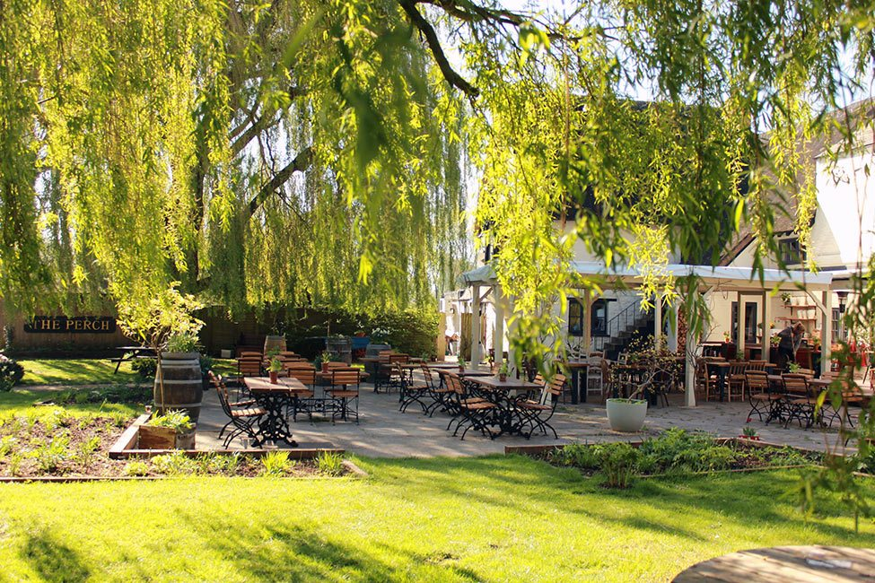
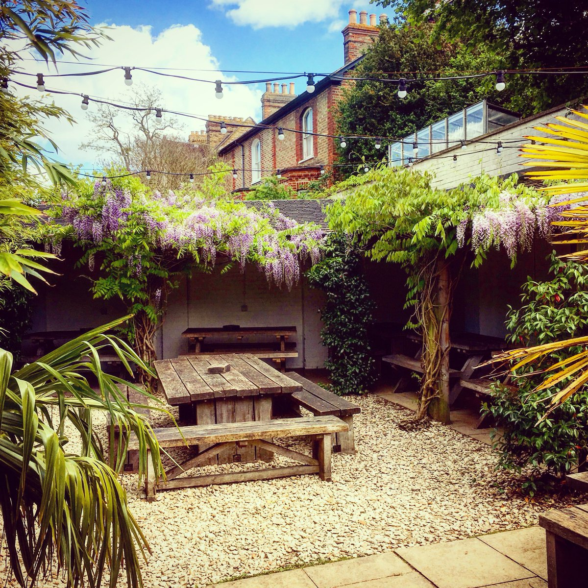
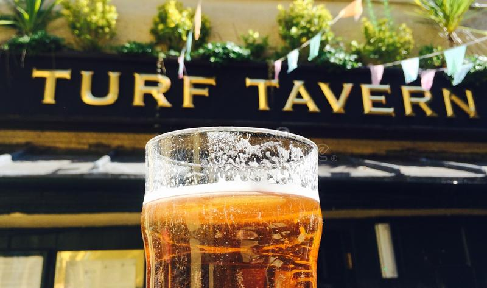
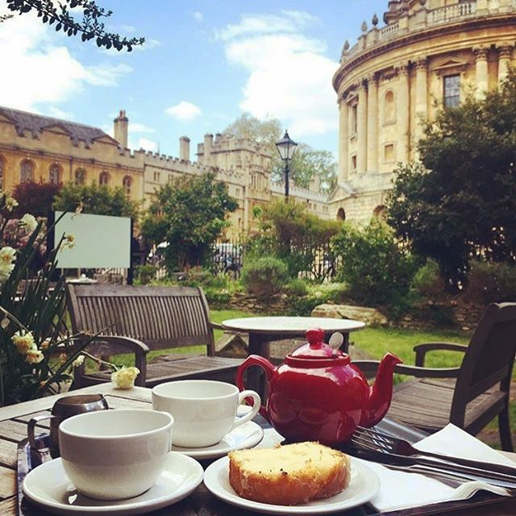
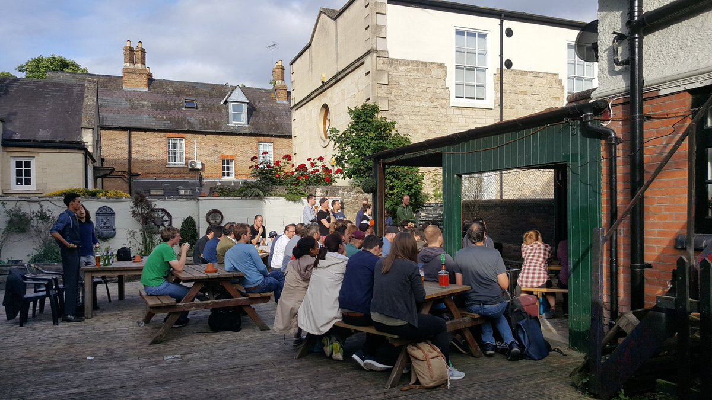
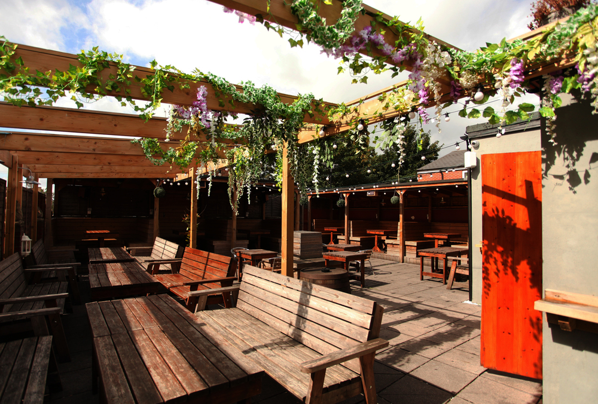
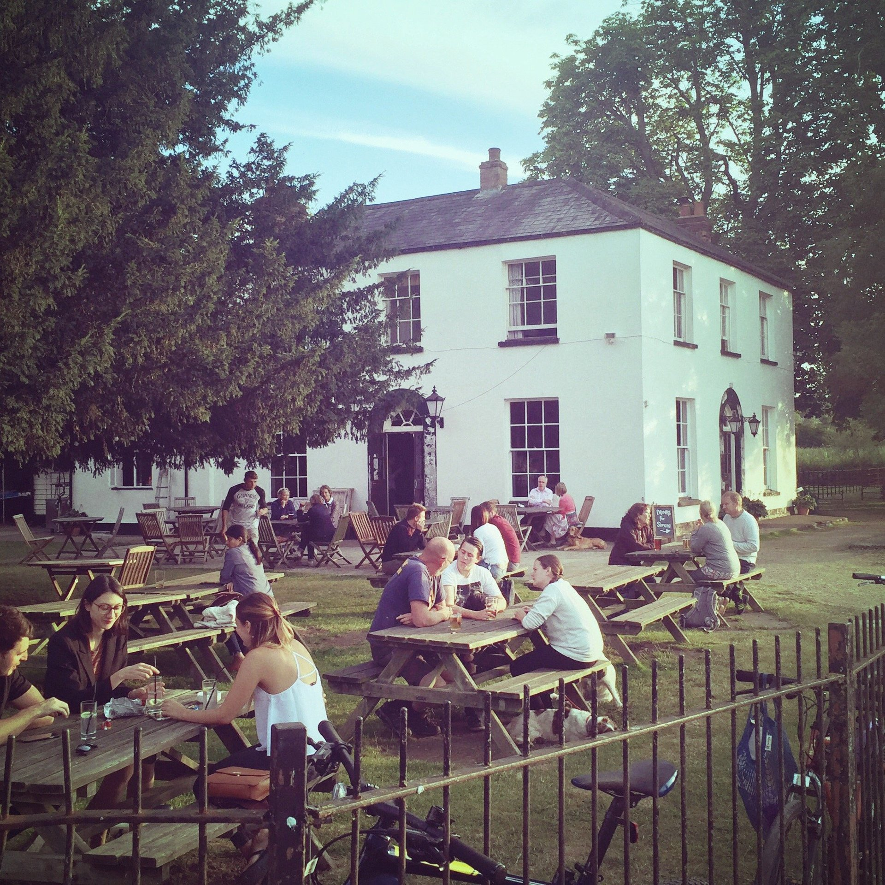
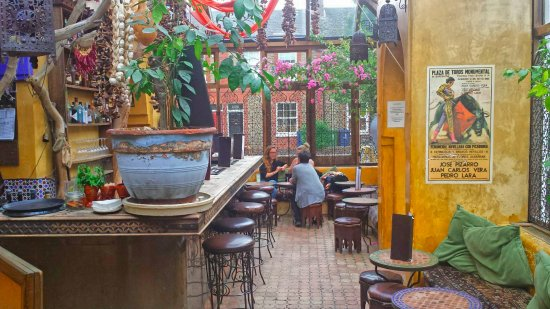

10 best beer gardens in Oxford
August 3rd, 2018
If you are passing by Oxford as a tourist, a visiting student or have already been living there for a while, you cannot miss the enthralling excitement happening around the many bars and pubs scattered in the city. There are especially a significant selection of front and back gardens which offer the perfect place to drink a pinte of a glass of Pimm's. Hope you'll take the most of my an hand-curated list of the most thrilling beer gardens one can find in The City of Dreaming Spires!
The Perch - Port Meadow
The Perch is one of Oxford’s oldest pubs and is situated in the village of Binsey, northwest of Oxford and close to the Isis (Oxford’s stretch of the Thames), overlooking Port Meadow. In the summer, there garden is the envy of the whole city, and the 17th century plaster-rubble building with its traditional thatched roof will charm even the most seasoned pub-goers. The Perch was frequented by author Lewis Carroll and is noted as one of the first places that he gave public readings of Alice in Wonderland.
Binsey Ln, Binsey, Oxford OX2 0NG.The Victoria - Jericho
Situated in Jericho, The Victoria has a front terrace which is one of the best spot to enjoy a Pimm's till the sunset. It is also well known by whisky connoisseurs for having a large choice of spirits. The Perch definitely pay tributes to food lovers and British gastronomy (if such thing exists) since amazing pies are served with classic British chips, I personally recommend the white truffles and spinach one. The back garden is also very enjoyable (see the picture), especially during spring and summer time. Beware for those who dislike taxidermy, there is a significant collection of these!
90 Walton St, Oxford OX2 6EB.The Turf Tavern - City center
Along with the Kings arms, it is an institution in Oxford [...]. It is quite hidden since both accesses are narrow streets. There are several back gardens... Huge glass of beers, tradition, prime minister etc...
4-5 Bath Pl, Oxford OX1 3SU.Vault and garden - City center
Quite an exotic location since it is situated in the University Church! The view from the terrace of the Radcliffe Camera and All Souls College is marvellous. It is definitely one of the best place to enjoy a cream tea in Oxford, ask for a Lapsang Souchong (Chineese smoked tea) to go with your (fresh out of the oven) scone.
1, Radcliffe Square, University Church, Oxford OX1 4AH.Angel & Greyhound - Cowley

In St Clement's street. Nice and quiet véranda at the back. Good selection of beers and dishes.
30 St Clement's St, Oxford OX4 1AB.Port Mahon - Cowley
Also in St Clement's street. Nice and quiet back garden with leather sofas.
82 St Clement's St, Oxford OX4 1AW.The Star - Cowley

Situated in street. Have a back garden with proper grass. Billard
21 Rectory Rd, Oxford OX4 1BU.Cowley Retreat - Cowley
Central in East Oxford. Quite good music (especially on weekdays). Great ambiance since quite busy. Nice selection of beers and cocktails.
172 Cowley Rd, Oxford OX4 1UE.Isis farmhouse - Iffley Lock
huge riverside pub garden along the Isis river. Weekly gypsy or jazz concert during summer time. Perfect spot for a break while doing a riverside side walk or bicycle ride (there is another pub southern...).
Haystacks Corner, The Towing Path, Iffley Lock, Oxford OX4 4EL.Kazbar - Cowley
Neither a beer garden, nor a pub, yet this address is definitely worth it. As soon as you'll have step your foot into the véranda, the charming North African ambiance shall quickly overwhelmed you! Spanish cuisine with tappas, wine and cocktails. The manager is really lively and will speak to you in three or four different languages in the same sentence! 50% discount between 5-6pm on some days (need to kindly ask the bartender).
25-27 Cowley Rd, Oxford OX4 1HP.